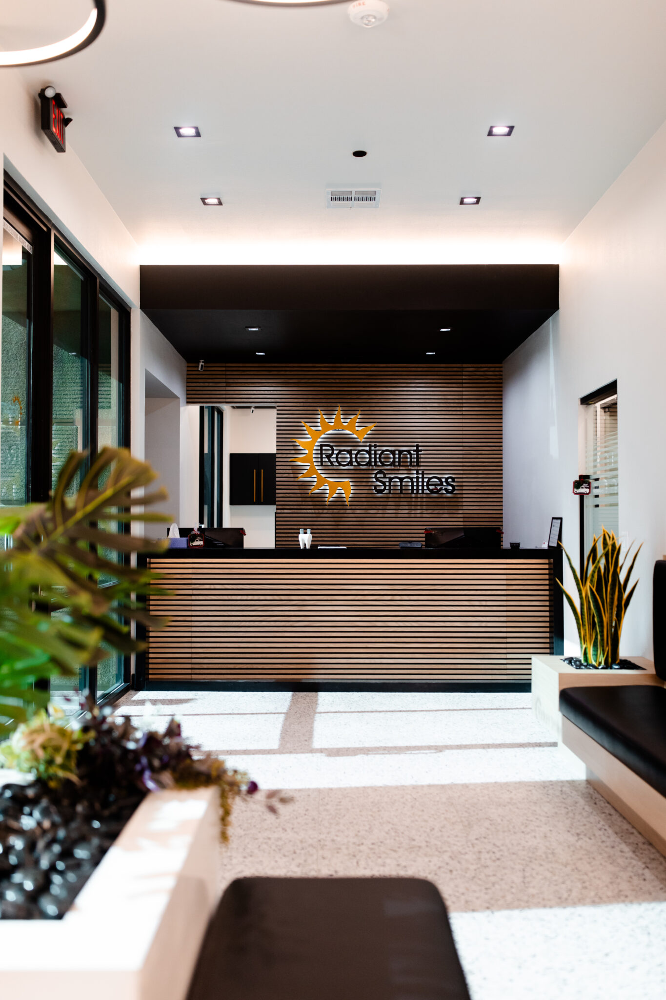

Dr. Vivi Dang-Roberts, Dentist in Las Vegas

A Loma Linda School of Dentistry graduate, class of 1994, at Radiant Smiles, one practice running seven offices.
A Loma Linda School of Dentistry graduate, class of 1994, at Radiant Smiles, one practice running seven offices.
Dr. Vivi Dang-Roberts graduated from the Loma Linda School of Dentistry in 1994. Her biography adds that she treats her patients like family members.
The school and the year are taken from that biography on the practice site, fetched 30 July 2026.
The family wording in her biography sets an expectation, so we say what it should mean at an appointment.
You are not rushed through the room. Questions get answered before any treatment is agreed to.
You hear what the finding is, what the choices are, and what happens if you decide to wait.
We are not claiming a gentler visit than anyone else. No source supports that comparison, so the page does not make it.

A named school and a stated year can be looked up.
That is what you are choosing between, rather than an anonymous appointment slot.
Dr. Dang-Roberts practises within the Radiant Smiles group. There are seven offices, in Las Vegas, North Las Vegas and Henderson.
Find the office nearest you
all seven offices